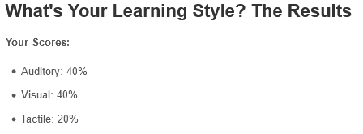
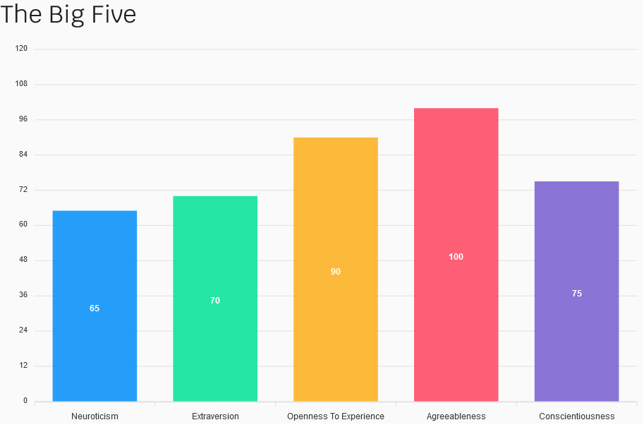

The results of my Myers-Briggs test is as follows:

The results of my online learning test is as follows:
The results of my Big Five Personality test are as follows:
I feel that these tests have a degree of accuracy about me as a person although they are imperfect. My learning test is one I feel some scepticism on; this is because as far as listening goes, I tend to have trouble holding attention and I feel I will learn by doing. I am however, quite a visual learner and like things not just verbally explained but shown. I recently built a rack for my old CDs and in order to get an idea of how to go about building it I watched some YouTube videos in order to get an idea. The Big Five and Myers-Briggs tests I feel are more accurate and give a general overview of my personality. What these mean to me is that I am generally a more introverted person, who values harmony and dislikes conflict. If I make a mistake I am usually dedicated to improving myself on whatever area that may be. Assertiveness does not come naturally for me but I can be more assertive if I have time to think situations over more and work out what is fair and what is not. There have been situations where I have asserted myself or even been highly aggressive (these were moments I believe there was genuine need to be aggressive).
I am always dedicated and always happy to help and do my part in a team environment as best as I can- this will be one of the more positive aspects of my personality with regard to working at a team. Being able to direct and lead others in something I can do with beginners particularly in certain areas but I am not usually willing to “take charge” and be the boss that tells everyone what to do. I am open to new ideas and if I am a new member to a work environment I will normally try to adapt to the system that is in place before asserting my own agenda. If I sense that there is a problem then I may say so but in a gentle and positive way if possible; I am not too down the line and blunt. Sometimes, this can be a weakness.
I believe I should attempt to form a team where everyone has an equal say and that there is “even ground” in terms of status of authority. If there is a need for someone to have the final say I would generally prefer not to be that person. I believe I should focus on what my professional strengths are and utilise those more often while allowing others with different strengths to focus on their areas more. To use an example I will give a context from my child care work- I am good with music and story telling and so I should do that more often. Whereas if a colleague is more suited to doing craft, I will let them do it more often. This doesn’t mean I shouldn’t try other areas- especially as I like to improve areas I struggle in. I will try to be kind and supportive to other team members as possible, but may have to think about how to say things if the need for being assertive arrives.
Home | Personal Information | Interest in IT | Ideal Job | My Project Idea